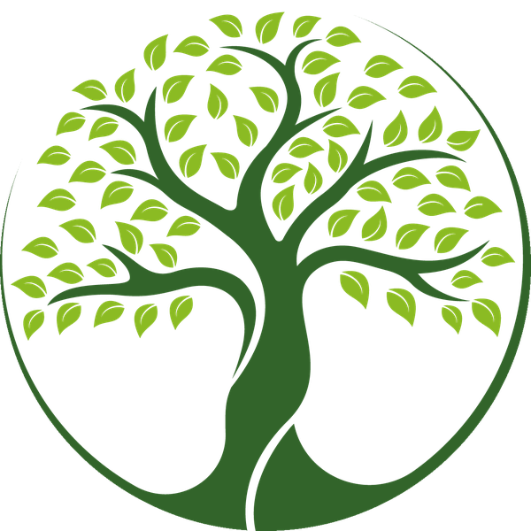

Konzept C · Wald als System · Prototyp, nicht final

Seddiner See · Brandenburg
Wir bieten Ihnen: Baumfällung, Baumpflege, Baumkontrolle, Winterdienst, Pflasterarbeiten, Neuanpflanzung, Grünflächenpflege und mehr.



Telefon 0172 3841620 · info@blfservice.de · Am Seehügel 1c, 14554 Seddiner See